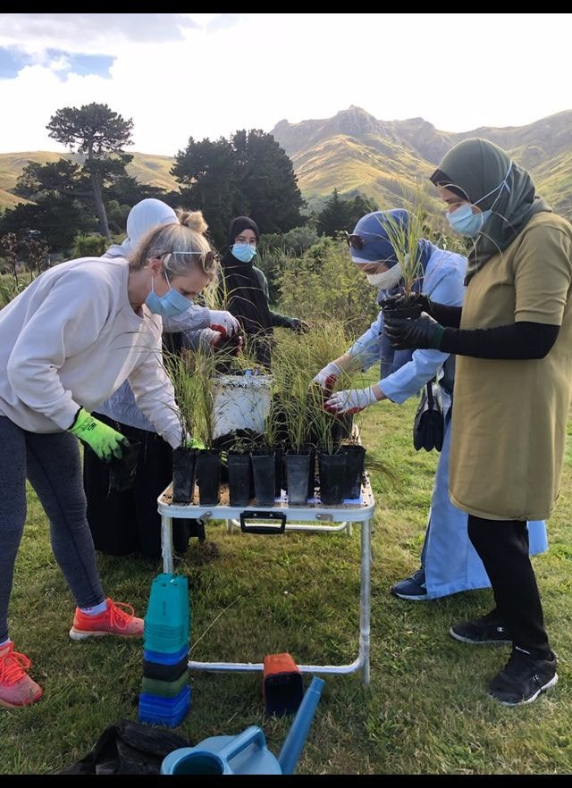

Strengthen community.
Create opportunities for people to come together, build relationships and grow a sense of belonging.
Our Purpose
We back community-led work that helps people participate, build trust and improve their social wellbeing.
Create opportunities for people to come together, build relationships and grow a sense of belonging.
Support social, spiritual, physical and psycho-emotional wellbeing, drawing on Te Whare Tapa Whā and Islamic principles.
Help people connect, build trust and contribute to the society around them.
Back people with ideas and energy to make a positive difference in their communities.
Wellbeing, in the round
Sakinah’s existing purpose draws on Te Whare Tapa Whā alongside Islamic perspectives and principles.

How the work happens
Sakinah provides grants for community-led initiatives and works with people, organisations and funders to sustain this work.
Explore funding supportCheck eligibility and request a funding application form.